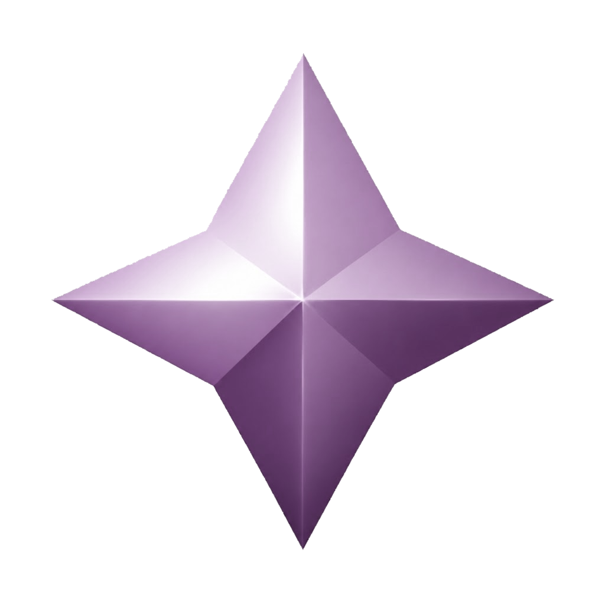

DESTINATION 01✦
EXPLORE THIS WORLD
✦ THE CELESTIAL ARCHIVE · BY BLAIR PAGE

Blair PageTHE CELESTIAL ARCHIVEEnter a living celestial archive of infrastructure, systems engineering, education, creative development, and everything in between.